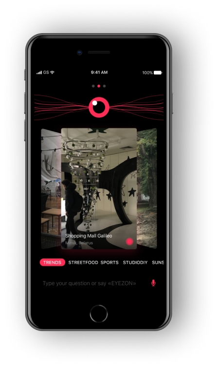

Что такое eyezon?
Это инструмент для видео-трансляций нового поколения, напрямую соединяющий вас с тем, кто может показать интересующий вас видео-обзор.Как он работает?
Используя искусственный интеллект, система анализирует все фото и короткие видео в приложении и, сопоставляя эти результаты с поисковым запросом, выдает в качестве результата только те изобажнеия, которые ему релевантны. Остается отправить запрос и ждать, когда автор сможет прислать видео-ответ на него.
